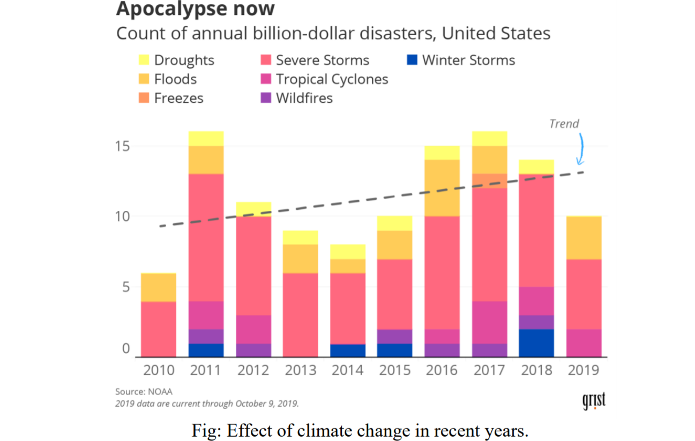
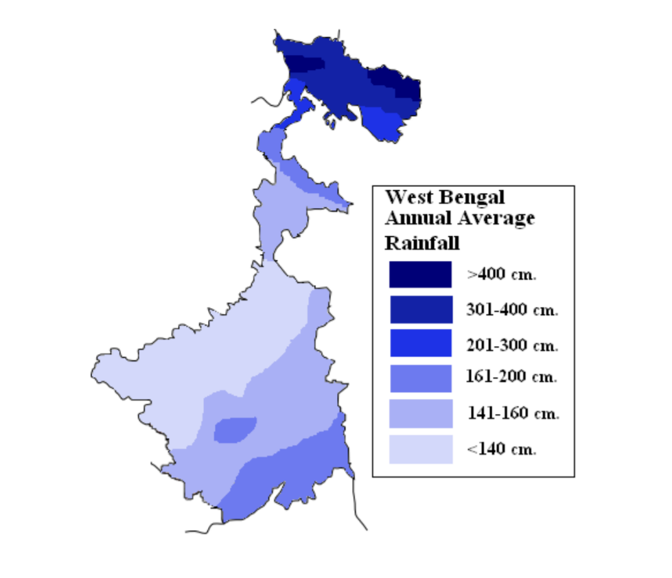

Climate change is the phenomenon of climatic transformation of a particular region or of the entire earth, characterized by the changes in the usual temperature, precipitation pattern and wind flow and other weather parameters. Climate change may occur due to natural internal processes or external forcing such as moderation of the solar cycles, volcanic eruptions, and persistent anthropogenic changes in the composition of the atmosphere or in land use.
Climate change refers to all form of climatic inconsistency regardless of their statistical nature, recently Intergovernmental Panel on Climate Change (IPCC) defines climate change as “any change in climate over time whether due to natural variability or a result of human activity” (2007). Significant changes in temperature and rainfall are already evident in many parts of the world (2001). India recognized as one of the most susceptible countries in the world due to climate change and its climate is becoming more unpredictable every year (World Bank, 2000). Climate induced hazards, like floods, cyclones, droughts, riverbank erosion, storm surges and others are aggravated and its variability being experienced more frequently than ever before 2007. The low-lying topography, funnel shaped coast exposing the land to cyclones and tidal surges, seasonal flooding, widespread poverty, large population base, poor institutional development have particularly made our country highly vulnerable to climate change.
Our main motive is to create and awareness among the people about the sustainable agricultural process and deal with climate changes.
West Bengal, located at eastern part of India, has a hot and humid monsoon type of climate. According to the variations of the elements (temperature, rainfall etc.) the climate of Wet Bengal can be divided into four seasons, namely, 1) Summer (March- June), 2) Monsoon (JulySeptember), 3) Autumn (October- November), and 4)Winter (December- February). In every season in West Bengal there are different types of crops that are being planted and some are being harvested. Climate plays a very important role in agriculture. And these anthropogenic or natural reasons that causing the climate change has a major impact on crop cycle of West Bengal. Broadly, these are changes in rainfall, changes in fishing patterns, rise in sea level, frequency and intensity of extreme climatic events, and heightened land erosion. These were the recurrent issues that need concern.
Climate change refers to any change in climate elements like temperature, precipitation, atmospheric gases, solar radiation, over a period of time, whether due to natural variability or as a result of human activity. Any permanent change in weather phenomena from the normal of a long period average is referred as climate change. The Earth’s climate is constantly changing as a result of natural processes. The global temperature increased by 2.0–3.0°C and increased in CO2 from 180 ppm to 350 ppm. Greenhouse gases (GHGs) trap some of the energy and the Earth releases it to space. The GHGs in the atmosphere act as a thermostat controlling the Earth’s climate.
Hence, the objectives of the study to combat the adverse effect of climate change identifying the specific problems and adoption of remedial measures for protection and environmental hazards and to prevent economic loss of the common people. And also educating people and spreading awareness to prevent upcoming natural resource crisis. In this project we mainly focus on the agricultural system of West Bengal and the effects of climate on it.
Agriculture plays a key role in overall economic and social well being of India. Though the share of agriculture in both Gross Domestic Product (GDP) and employment has declined over time, the pace of decline in its share in employment has been much slower than that of GDP. The share of agriculture in GDP is declined from 39% in 1983 to 24% in 2000–01 compared with much lower rate of decline in its share in total employment from 63% to 57% during the same period. Declines in the share of agriculture in GDP were not commensurate with the fall in dependency in agriculture. Such trends have resulted in fragmentation and decline in the size of land holdings which leads to agronomic inefficiency, a rise in unemployment, and a low volume of marketable surplus. These factors could contribute to increase vulnerability to global environmental change. In India, average food consumption at present is 550 gm per capita per day whereas the corresponding figures in China and USA are 980 gm and 2850 gm respectively.
There is now clear evidence for an observed increase in global average temperatures and change in rainfall rates during the 20th century. The most important climatic changes in recent times is the increase in the atmospheric temperatures due to increased levels of greenhouse gases such as carbon dioxide (CO2), methane (CH4), ozone (O3), nitrous oxide (N2O) and chloro-fluoro carbons (CFCs).
Causes of climate change are as follows :
Green House Effect : Green House effect is the phenomenon whereby the earth's atmosphere traps solar radiation, and is mediated by the presence in the atmosphere of gases such as carbon dioxide, water vapor, and methane that allow incoming sunlight to pass through, but absorb the heat radiated back from the earth's surface.
Thus the Green house gases (GHGs) provide a blanketing effect in the lower strata of the earth’s atmosphere, and this blanketing effect is being enhanced because of the human activities like burning of fossil fuels etc.
Effects of Enhanced CO2 : Crop species vary in their response to different concentrations of CO2. Wheat, rice, soybeans, etc., which belongs to C3 plants, respond readily to increased CO2 levels. Maize, sorghum, millets, sugarcane, which are classified as C4 plants, though more efficient photosynthetically than C3 plants at present levels of CO2, they tend to be less responsive to enriched concentrations of CO2.
Change of land use, availability of irrigation, frequency and intensity of inter and intraseasonal droughts and floods, and availability of energy.
Impacts of Climate Change on Crops
Beside creating this report, we (me and my classmate Suraj Singh) prepared a website providing proper information about agriculture which will help the common men to get more conscious about the dos and the don’t in sustainable agricultural methods. In this era of internet, I believe websites can spread the fire of awareness in the atmosphere faster than any other mode. On publishing this website, it can reach many people out there in our country and that would help to enrich their knowledge and we are also planning to make a feedback section or fact section in our website where people can post the real facts that can be helpful for others who did not know that. With time, the more we develop our skills we’ll try to include more and more amazing features to our website. To access our website click here.
There is a likelihood of a considerable impact on agricultural land-use due to snow melt, availability of irrigation, frequency and intensity of inter- and intra- seasonal droughts and floods, soil organic transformation matters, soil erosion and availability of energy as a consequence of global warming, impacting agricultural production and hence, the nations food security (Okammoto, 2004). Global warming due to greenhouse effect is expected to impact hydrological cycle viz. precipitation, evapo-transpiration, soil moisture etc, which would pose new challenges for agriculture.